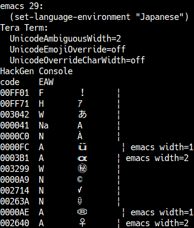
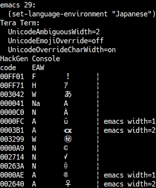

If you enables the back wrap, the cursor at the beginning of a line moves back to the end of previous line when a BS character is received. To enable the back wrap, edit the BackWrap line in the [Tera Term] section of the setup file like the following:
BackWrap=on
Default: BackWrap=off
Tera Term will sound the beep when the BEL character(ASCII $07) receives.
You can disable the beep sound for the BEL character by editing the Beep line in the [Tera Term] section of the setup file like the following:
Beep=off
Also, the terminal screen will flush instead of sounding the beep in the following configuration.
Beep=visual
Default: Beep=on
If you choose the Terminal ID to be "VT2XX" or "VT3XX" in the [Setup] Terminal dialog box, characters in range of ASCII $80-$9F are interpreted as the C1 control characters.
You can disable this interpretation and make these characters visible on the screen (if you are using a font which supports these characters), by editing the Accept8BitCtrl line in the [Tera Term] section of the setup file like the following:
Accept8BitCtrl=off
Default: Accept8BitCtrl=on
When sending C1 control characters, Tera Term uses equivalent 7-bit sequences.
To send C1 control characters as single 8-bit characters, edit the Send8BitCtrl line in the [Tera Term] section of the setup file like the following:
Send8BitCtrl=on
Note: This setting is used only as default setting. Host can change this setting by S7C1T / S8C1T / DECSCL control sequence.
Default: Send8BitCtrl=off
The "kanji-out" sequence ^[(H used in some systems does not comply with JIS/ISO standards. Do not use it unless it is really necessary. Bay default, ^[(H can not be selected in the [Setup] terminal dialog box to prevent mistakes.
To select ^[(H as "kanji-out" sequence, edit the AllowWrongSequence line in the [Tera Term] section of the setup file like the following:
AllowWrongSequence=on
Default: AllowWrongSequence=off
Even if a control character (e.g. line feed character) is placed between the first and second bytes of a 2-byte character (Kanji) sent from the host, both the 2-byte character and the control character will be handled correctly by Tera Term's default settings.
To invalidate the first character of a 2-byte character(Kanji) when a control character is placed between the first and second bytes, edit the CtrlInKanji line in the [Tera Term] section of the setup file like the following:
CtrlInKanji=off
If a second byte comes after this, it will be shown as garbage. For applications that do not handle 2-byte characters correctly, this may result in fewer garbled screen characters. For example, if there is an application that produces a newline character after the first byte of a Kanji character, but not the second byte after it, the Kanji character will be discarded, but the characters that come after the newline character will not be garbled.
Default: CtrlInKanji=on
To display all received characters (including control characters) on the screen, edit the Debug line in the [Tera Term] section of the setup file like the following:
Debug=on
If you press Shift+Esc, Tera Term enters the debug mode, in which all received characters are displayed on the screen. The debug mode have four pattern, a user can switch from output as usual to disable output completely.
If you select the output as usual in the debug mode, Tera Term returns to the normal mode.
In the debug mode, received characters are displayed by the following way:
ASCII code of the character Displaying form
$00 - $1F ^@ - ^_
($00=^@ $01=^A $02=^B $03=^C $04=^D $05=^E $06=^F $07=^G
$08=^H $09=^I $0A=^J $0B=^K $0C=^L $0D=^M $0E=^N $0F=^O
$10=^P $11=^Q $12=^R $13=^S $14=^T $15=^U $16=^V $17=^W
$18=^X $19=^Y $1A=^Z $1B=^[ $1C=^\ $1D=^] $1E=^^ $1F=^_)
$20 - $7E normal character
$7F <DEL>
$80 - $FF MSB of the ASCII code is turned to be 0 and displayed by
the same way as one for $00-$7F characters,
except that text is displayed in the reversed color.
In the hex output mode, received characters are displayed by the following way:
ASCII code of the character Displaying form $00 - $FF hex format(capital letters) separated by a space
Default: Debug=off
To disable the status line functions of VT terminal, edit the EnableStatusLine line in the [Tera Term] section of the setup file like the following:
EnableStatusLine=off
Then, escape sequences for the status line functions are ignored.
Default: EnableStatusLine=on
In TEK GIN mode, the cross hair cursor appears in the TEK window. When you press a key or click the left mouse button, the key code (ASCII code) is sent with the coordinate of the cursor.
You can change the key code for the left mouse button by editing the TEKGINMouseCode line in the [Tera Term] section of the setup file like the following:
TEKGINMouseCode=<key code>
Default: TEKGINMouseCode=32 (ASCII code 32 corresponds to the space character.)
If you set 'on', the behavior of tab at end-of-line is the same as VT/PuTTY/xterm. The tab doesn't cause automatic linefeed.
If you set 'off', the behavior of tab at end-of-line is the same as FreeBSD console(syscons). The tab causes automatic linefeed. (it is not compatible with VT)
VTCompatTab=on
Default: VTCompatTab=off
<ESC>[J (Erase Below) escape sequence equals <ESC>[2J (Erase All) when the current cursor is top left (0, 0).
A user can configure whether the current buffer scrolls down when the screen is clear.
If this configuration value is on, the current buffer will scroll down as well as <ESC>[2J escape sequence.
If this configuration value is off, the current buffer will not scroll down. Instead, some buffers from the cursor position to the end of the screen.
Default: ScrollWindowClearScreen=on
This section describes the settings.
See next pages.
Some mapping characters are categorized into several groups and you can specify each group to be converted or not.
If a user configures this option, please specify the sum value of the converting character at UnicodeToDecSpMapping entry.
Type A: Rule marks Value: 1 Box drawings (U+2500-U+257F)
Type B: The character that is displayed "??" up to version 4.58 (it includes undisplayed characters in English environment). Value: 2 Bullet (U+2022) Hyphenation point (U+2027) Light shade (25%) (U+2591) Medium shade (50%) (U+2592) Dark shade (75%) (U+2593) Black small square (U+25AA) Black vertical rectangle (U+25AE) Black very small square (U+2B1D)
Type C: The character that is displayed as bullet(wide character) in Japanese environment, and is displayed as Middle dot in English environment.
NOTICE: A user is recommended to not specifying this option unless in Japanese environment. Value: 4 Middle dot (U+00B7) One dot leader (U+2024) Bullet operator (U+2219)
Default: # Type A and B UnicodeToDecSpMapping=3
A use can change the default action of the function key and the editor keypad from Tera Term 4.62. When a user can use this feature, the key sequence like as the VT terminal sends to the server without the keyboard configuration file.
If a user disables the function key action in the keyboard configuration file and sends nothing to the server, please change the StrictKeyMapping entry in teraterm.ini file in the following:
StrictKeyMapping=on
The default value: StrictKeyMapping=off
To send MSB(Most Significant Bit) set character by using the Alt key, a user should modify Meta8Bit line of [Tera Term] section in a configuration file as follows
Meta8Bit=raw
To send MSB(Most Significant Bit) set character by using the Alt key with a conversion to transmission character code (e.g. UTF-8), a user should modify Meta8Bit line of [Tera Term] section in a configuration file as follows
Meta8Bit=text
Also, the user should enable the Meta Key setting.
default: Meta8Bit=off
Tera Term 4.65 later version supports for the alternate screen buffer. An old screen is restored when the application such as Vim and less exits.
To disable the alternate screen buffer functions, edit the AlternateScreenBuffer line in the [Tera Term] section of the setup file like the following:
AlternateScreenBuffer=off
default: AlternateScreenBuffer=on
When the Tera Term receives the DA3 control sequence, the Tera Term replies the terminal unique ID. The ID is 8-digit hex value, the first 2-digit is the manufacture place and the remaining 6-digit is the unique number in the place.
If a user changes the ID to the 01234567, configure the TerminalUID entry in the teraterm.ini file as follows:
TerminalUID=01234567
Default: TerminalUID=FFFFFFFF
Basically, the terminal unique ID can be changed by receiving the DECSTUI control sequence. However, this feature is disabled.
When the feature is enabled, describe the LockTUID entry in the [Tera Term] section as follows:
LockTUID=off
Default: LockTUID=on
When the tabstop position can not be able to modify by the control sequence, configure below TabStopModifySequence entry in the [Tera Term] section of the teraterm.ini file.
TabStopModifySequence=off
Also, some control sequences can not be able to do. Enabling sequences of the tabstop control sequence are as follows:
| Mnemonic | Sequence | Description |
|---|---|---|
| HTS7 | ESC H | Enables the tabstop at the cursor position(7bit form). |
| HTS8 | 0x88 | Enables the tabstop at the cursor position(8bit form). |
| HTS | - | Both HTS7 and HTS8. |
| TBC0 | ESC [ 0 g | Disabling the tabstop at the cursor position. |
| TBC3 | ESC [ 3 g | Disabling all tabstop. |
| TBC | - | Both TBC0 and TBC3. |
For example, when 8bit-form tabstop sequence(HTS8) is disabled, configure below TabStopModifySequence entry in the [Tera Term] section of the teraterm.ini file.
TabStopModifySequence=HTS7,TBC
Default: TabStopModifySequence=on
When the BEL character(ASCII $07) is sent from the host server, Tera Term will generate a beep sound and blink a screen.
When a user shows the binary file by mistake and many BEL characters are sent, much beep sound can suppress automatically.
For example, when the BeepOverUsedTime, BeepOverUsedCount and BeepSuppressTime are below configured, the beep sound will be suppressed for ten seconds after five BEL characters are sent for two seconds.
BeepOverUsedTime=2 BeepOverUsedCount=5 BeepSuppressTime=10
Default: BeepOverUsedTime=2 BeepOverUsedCount=5 BeepSuppressTime=5
When the BEL character(ASCII $07) is sent from the host server, Tera Term can blink a screen.
Blinking is inpremented by reverse terminal and wait for a certain time, and revser terminal again.
A user can configure the wait time.
; Wait time (ms) when Beep is Visual Bell BeepVBellWait=100
Default: BeepVBellWait=10
Tera Term will expand the buffer size of the OSC string when the buffer size is lack. However, when the remote host sends invalid OSC string by using the host bug, Tera Term will restrict the buffer size to prevent enlarged memory allocation.
When the OSC 52 (PASTE64) is used for burst data, the remote host data may be
abandoned by above restriction.
So, a user can configure the OSC buffer size in the MaxOSCBufferSize entry of the
teraterm.ini file.
MaxOSCBufferSize=16000
Default: MaxOSCBufferSize=4096
When character set switching by ISO/IEC 2022 shift is forbidden, please configure below setting on ISO2022ShiftFunction entry of [Tera Term] section in the teraterm.ini file.
ISO2022ShiftFunction=off
Also, specific entry can be disabled into ISO/IEC 2022 shift function. Please specify accepted function name's combination into below shift function.
| Mnemonic | Code | Description |
|---|---|---|
| SI | 0x0F | Maps G0 character set into GL. |
| SO | 0x0E | Maps G1 character set into GL. |
| LS2 | ESC n | Maps G2 character set into GL. |
| LS3 | ESC o | Maps G3 character set into GL. |
| LS1R | ESC ~ | Maps G1 character set into GR. |
| LS2R | ESC } | Maps G2 character set into GR. |
| LS3R | ESC | | Maps G3 character set into GR. |
| SS2 | 0x8E / ESC N | Temporarily maps the G2 character set into GL or GR, for the next graphic character. |
| SS3 | 0x8F / ESC O | Temporarily maps the G3 character set into GL or GR, for the next graphic character. |
| ALL | - | All of the above |
| NONE | - | Nothing |
For example, when Shift-In(SI) and Shift-Out(SO) is disabled, please configure below setting on the ISO2022ShiftFunction entry of [Tera Term] section in the teraterm.ini file.
ISO2022ShiftFunction=LS2,LS3,LS1R,LS2R,LS3R,SS2,SS3
Also, when '-' is added in the front of name, specified shift function can be disabled. The above Shift-In(SI) and Shift-Out(SO) is disabled to configure below setting.
ISO2022ShiftFunction=ALL,-SI,-SO
NOTE: When this format is specified, using function is replaced after configure saving.
Default: ISO2022ShiftFunction=on
In the following configuration:
For example, if you execute the following, it will display as "ﾃﾗﾀｰﾑ".
echo -e '\016CW@0Q\017' # => ﾃﾗﾀｰﾑ
However, when G1 is designated another character set, JIS X 0201 half-width katakana is not displayed using SO.
# G1 is designated US-ASCII. echo -e '\033)B' # Even when G1 is invoked to GL using SO, JIS X 0201 half-width katakana cannot be displayed. echo -e '\016CW@0Q\017' # => CW@0Q
When FixedJIS=on, G1 is invoked to GL using SO, G1 is designated JIS X 0201 half-width katakana. So JIS X 0201 katakana is always displayed.
"FixedJIS=on" is a setting to lock G1 to JIS X 0201 half-width katakana. This allows the terminal is always a 7-bit JIS katakana terminal.
Default: FixedJIS=off
Decode invalid UTF-8 characters as CP932. This is an experimental implementation.
When using a Cygwin connection and the output character code of Windows command is CP932, it can be displayed correctly.
Default: FallbackToCP932=off
When using Unicode (UTF-8), the rendering width can be configured for each character.
Define the code point and its corresponding character width (in cells).
Character width settings are configured by editing the INI file.
You can enable or disable this setting with
Override character width per character.
Multiple character width settings can be defined. You can select which one to use.
Description[UnicodeOverrideCharWidth] List1=CellWidth1 List2=CellWidth2 List3=jis0208.ini, CellWidth Selected=1 Enable=on
; TERATERM.INI [CellWidth1] Name=sample1 Range1=U+2605,U+2606,2 Range2=U+00a9,2 Range3=U+1F363,0 Range4=U+2665,1 Range5=U+1F90D,2
Set up Emacs for a CJK character environment.
Set the width of ambiguous characters in Tera Term to 2 cells.
Turn off the UnicodeEmojiOverride setting. With this setting disabled, ambiguous-width emoji use the width configured in Tera Term, while all other emoji use the width defined by the East_Asian_Width property.

With the above settings, all Ambiguous characters are rendered with a width of 2 cells. Some Ambiguous characters are expected to have a width of 1 cell in emacs.
Set the width of these characters individually to 1.
; TERATERM.INI [CellWidth2] Name=sample 2 Range1=U+0000AE,1 Range2=U+0000FC,1

To match the width of all Unicode 17 ambiguous characters to Emacs 29, use the following settings:
; TERATERM.INI [CellWidth3] ; AlmaLinux OS 10 ; emacs-nw-29.4-12.el10.x86_64 ; (set-language-environment "Japanese") Name=emacs 29 CJK Range1=U+0000A1,1 ; INVERTED EXCLAMATION MARK Range2=U+0000A4,1 ; CURRENCY SIGN Range3=U+0000A7,2 ; SECTION SIGN Range4=U+0000A8,2 ; DIAERESIS Range5=U+0000AA,1 ; FEMININE ORDINAL INDICATOR Range6=U+0000AD,1 ; SOFT HYPHEN Range7=U+0000AE,1 ; REGISTERED SIGN Range8=U+0000B0,2 ; DEGREE SIGN Range9=U+0000B1,2 ; PLUS-MINUS SIGN Range10=U+0000B2,U+0000B3,1 ; SUPERSCRIPT TWO..SUPERSCRIPT THREE Range11=U+0000B4,2 ; ACUTE ACCENT Range12=U+0000B6,2 ; PILCROW SIGN..MIDDLE DOT Range13=U+0000B7,1 Range14=U+0000B8,1 ; CEDILLA Range15=U+0000B9,1 ; SUPERSCRIPT ONE Range16=U+0000BA,1 ; MASCULINE ORDINAL INDICATOR Range17=U+0000BC,U+0000BE,1 ; VULGAR FRACTION ONE QUARTER..VULGAR FRACTION THREE QUARTERS Range18=U+0000BF,1 ; INVERTED QUESTION MARK Range19=U+0000C6,1 ; LATIN CAPITAL LETTER AE Range20=U+0000D0,1 ; LATIN CAPITAL LETTER ETH Range21=U+0000D7,2 ; MULTIPLICATION SIGN Range22=U+0000D8,1 ; LATIN CAPITAL LETTER O WITH STROKE Range23=U+0000DE,U+0000E1,1 ; LATIN CAPITAL LETTER THORN..LATIN SMALL LETTER A WITH ACUTE Range24=U+0000E6,1 ; LATIN SMALL LETTER AE Range25=U+0000E8,U+0000EA,1 ; LATIN SMALL LETTER E WITH GRAVE..LATIN SMALL LETTER E WITH CIRCUMFLEX Range26=U+0000EC,U+0000ED,1 ; LATIN SMALL LETTER I WITH GRAVE..LATIN SMALL LETTER I WITH ACUTE Range27=U+0000F0,1 ; LATIN SMALL LETTER ETH Range28=U+0000F2,U+0000F3,1 ; LATIN SMALL LETTER O WITH GRAVE..LATIN SMALL LETTER O WITH ACUTE Range29=U+0000F7,2 ; DIVISION SIGN Range30=U+0000F8,U+0000FA,1 ; LATIN SMALL LETTER O WITH STROKE..LATIN SMALL LETTER U WITH ACUTE Range31=U+0000FC,1 ; LATIN SMALL LETTER U WITH DIAERESIS Range32=U+0000FE,1 ; LATIN SMALL LETTER THORN Range33=U+000101,1 ; LATIN SMALL LETTER A WITH MACRON Range34=U+000111,1 ; LATIN SMALL LETTER D WITH STROKE Range35=U+000113,1 ; LATIN SMALL LETTER E WITH MACRON Range36=U+00011B,1 ; LATIN SMALL LETTER E WITH CARON Range37=U+000126,U+000127,1 ; LATIN CAPITAL LETTER H WITH STROKE..LATIN SMALL LETTER H WITH STROKE Range38=U+00012B,1 ; LATIN SMALL LETTER I WITH MACRON Range39=U+000131,U+000133,1 ; LATIN SMALL LETTER DOTLESS I..LATIN SMALL LIGATURE IJ Range40=U+000138,1 ; LATIN SMALL LETTER KRA Range41=U+00013F,U+000142,1 ; LATIN CAPITAL LETTER L WITH MIDDLE DOT..LATIN SMALL LETTER L WITH STROKE Range42=U+000144,1 ; LATIN SMALL LETTER N WITH ACUTE Range43=U+000148,U+00014B,1 ; LATIN SMALL LETTER N WITH CARON..LATIN SMALL LETTER ENG Range44=U+00014D,1 ; LATIN SMALL LETTER O WITH MACRON Range45=U+000152,U+000153,1 ; LATIN CAPITAL LIGATURE OE..LATIN SMALL LIGATURE OE Range46=U+000166,U+000167,1 ; LATIN CAPITAL LETTER T WITH STROKE..LATIN SMALL LETTER T WITH STROKE Range47=U+00016B,1 ; LATIN SMALL LETTER U WITH MACRON Range48=U+0001CE,1 ; LATIN SMALL LETTER A WITH CARON Range49=U+0001D0,1 ; LATIN SMALL LETTER I WITH CARON Range50=U+0001D2,1 ; LATIN SMALL LETTER O WITH CARON Range51=U+0001D4,1 ; LATIN SMALL LETTER U WITH CARON Range52=U+0001D6,1 ; LATIN SMALL LETTER U WITH DIAERESIS AND MACRON Range53=U+0001D8,1 ; LATIN SMALL LETTER U WITH DIAERESIS AND ACUTE Range54=U+0001DA,1 ; LATIN SMALL LETTER U WITH DIAERESIS AND CARON Range55=U+0001DC,1 ; LATIN SMALL LETTER U WITH DIAERESIS AND GRAVE Range56=U+000251,1 ; LATIN SMALL LETTER ALPHA Range57=U+000261,1 ; LATIN SMALL LETTER SCRIPT G Range58=U+0002C4,1 ; MODIFIER LETTER UP ARROWHEAD Range59=U+0002C7,1 ; CARON Range60=U+0002C9,U+0002CB,1 ; MODIFIER LETTER MACRON..MODIFIER LETTER GRAVE ACCENT Range61=U+0002CD,1 ; MODIFIER LETTER LOW MACRON Range62=U+0002D0,1 ; MODIFIER LETTER TRIANGULAR COLON Range63=U+0002D8,U+0002DB,1 ; BREVE..OGONEK Range64=U+0002DD,1 ; DOUBLE ACUTE ACCENT Range65=U+0002DF,1 ; MODIFIER LETTER CROSS ACCENT Range66=U+000300,U+00036F,1 ; COMBINING GRAVE ACCENT..COMBINING LATIN SMALL LETTER X Range67=U+000391,U+0003A1,2 ; GREEK CAPITAL LETTER ALPHA..GREEK CAPITAL LETTER RHO Range68=U+0003A3,U+0003A9,2 ; GREEK CAPITAL LETTER SIGMA..GREEK CAPITAL LETTER OMEGA Range69=U+0003B1,U+0003C1,2 ; GREEK SMALL LETTER ALPHA..GREEK SMALL LETTER RHO Range70=U+0003C3,U+0003C9,2 ; GREEK SMALL LETTER SIGMA..GREEK SMALL LETTER OMEGA Range71=U+000401,2 ; CYRILLIC CAPITAL LETTER IO Range72=U+000410,U+00044F,2 ; CYRILLIC CAPITAL LETTER A..CYRILLIC SMALL LETTER YA Range73=U+000451,2 ; CYRILLIC SMALL LETTER IO Range74=U+002010,2 ; HYPHEN Range75=U+002013,1 ; EN DASH Range76=U+002014,U+002015,2 ; ..HORIZONTAL BAR Range77=U+002016,2 ; DOUBLE VERTICAL LINE Range78=U+002018,2 ; LEFT SINGLE QUOTATION MARK Range79=U+002019,2 ; RIGHT SINGLE QUOTATION MARK Range80=U+00201C,2 ; LEFT DOUBLE QUOTATION MARK Range81=U+00201D,2 ; RIGHT DOUBLE QUOTATION MARK Range82=U+002020,U+002021,2 ; DAGGER..BULLET Range83=U+002022,1 Range84=U+002024,1 ; ONE DOT LEADER..HYPHENATION POINT Range85=U+002025,U+002026,2 Range86=U+002027,1 Range87=U+002030,2 ; PER MILLE SIGN Range88=U+002032,U+002033,2 ; PRIME..DOUBLE PRIME Range89=U+002035,1 ; REVERSED PRIME Range90=U+00203B,2 ; REFERENCE MARK Range91=U+00203E,1 ; OVERLINE Range92=U+002074,1 ; SUPERSCRIPT FOUR Range93=U+00207F,1 ; SUPERSCRIPT LATIN SMALL LETTER N Range94=U+002081,U+002084,1 ; SUBSCRIPT ONE..SUBSCRIPT FOUR Range95=U+0020AC,1 ; EURO SIGN Range96=U+002103,2 ; DEGREE CELSIUS Range97=U+002105,1 ; CARE OF Range98=U+002109,1 ; DEGREE FAHRENHEIT Range99=U+002113,1 ; SCRIPT SMALL L Range100=U+002116,2 ; NUMERO SIGN Range101=U+002121,2 ; TELEPHONE SIGN..TRADE MARK SIGN Range102=U+002122,1 Range103=U+002126,1 ; OHM SIGN Range104=U+00212B,2 ; ANGSTROM SIGN Range105=U+002153,U+002154,1 ; VULGAR FRACTION ONE THIRD..VULGAR FRACTION TWO THIRDS Range106=U+00215B,U+00215E,1 ; VULGAR FRACTION ONE EIGHTH..VULGAR FRACTION SEVEN EIGHTHS Range107=U+002160,U+002169,2 ; ROMAN NUMERAL ONE..ROMAN NUMERAL TWELVE Range108=U+00216A,U+00216B,1 Range109=U+002170,U+002179,1 ; SMALL ROMAN NUMERAL ONE..SMALL ROMAN NUMERAL TEN Range110=U+002189,1 ; VULGAR FRACTION ZERO THIRDS Range111=U+002190,U+002193,2 ; LEFTWARDS ARROW..LEFT RIGHT ARROW Range112=U+002194,1 Range113=U+002195,U+002199,1 ; UP DOWN ARROW..SOUTH WEST ARROW Range114=U+0021B8,U+0021B9,1 ; NORTH WEST ARROW TO LONG BAR..LEFTWARDS ARROW TO BAR OVER RIGHTWARDS ARROW TO BAR Range115=U+0021D2,2 ; RIGHTWARDS DOUBLE ARROW Range116=U+0021D4,2 ; LEFT RIGHT DOUBLE ARROW Range117=U+0021E7,1 ; UPWARDS WHITE ARROW Range118=U+002200,2 ; FOR ALL Range119=U+002202,U+002203,2 ; PARTIAL DIFFERENTIAL..THERE EXISTS Range120=U+002207,U+002208,2 ; NABLA..ELEMENT OF Range121=U+00220B,2 ; CONTAINS AS MEMBER Range122=U+00220F,1 ; N-ARY PRODUCT Range123=U+002211,2 ; N-ARY SUMMATION Range124=U+002215,1 ; DIVISION SLASH Range125=U+00221A,2 ; SQUARE ROOT Range126=U+00221D,U+002220,2 ; PROPORTIONAL TO..ANGLE Range127=U+002223,1 ; DIVIDES Range128=U+002225,2 ; PARALLEL TO Range129=U+002227,U+00222C,2 ; LOGICAL AND..DOUBLE INTEGRAL Range130=U+00222E,U+002234,2 ; THEREFORE..PROPORTION Range131=U+002235,U+002236,1 Range132=U+00223C,1 ; TILDE OPERATOR..REVERSED TILDE Range133=U+00223D,2 Range134=U+002248,1 ; ALMOST EQUAL TO Range135=U+00224C,1 ; ALL EQUAL TO Range136=U+002252,2 ; APPROXIMATELY EQUAL TO OR THE IMAGE OF Range137=U+002260,U+002261,2 ; NOT EQUAL TO..IDENTICAL TO Range138=U+002264,U+002265,1 ; LESS-THAN OR EQUAL TO..GREATER-THAN OVER EQUAL TO Range139=U+002266,U+002267,2 Range140=U+00226A,U+00226B,2 ; MUCH LESS-THAN..MUCH GREATER-THAN Range141=U+00226E,U+00226F,1 ; NOT LESS-THAN..NOT GREATER-THAN Range142=U+002282,U+002283,2 ; SUBSET OF..SUPERSET OF Range143=U+002286,U+002287,2 ; SUBSET OF OR EQUAL TO..SUPERSET OF OR EQUAL TO Range144=U+002295,1 ; CIRCLED PLUS Range145=U+002299,1 ; CIRCLED DOT OPERATOR Range146=U+0022A5,2 ; UP TACK Range147=U+0022BF,2 ; RIGHT TRIANGLE Range148=U+002312,2 ; ARC Range149=U+002460,U+002473,2 ; CIRCLED DIGIT ONE..NUMBER TWENTY FULL STOP Range150=U+002474,U+00249B,1 Range151=U+00249C,U+0024E9,1 ; PARENTHESIZED LATIN SMALL LETTER A..CIRCLED LATIN SMALL LETTER Z Range152=U+0024EB,U+0024FF,1 ; NEGATIVE CIRCLED NUMBER ELEVEN..NEGATIVE CIRCLED DIGIT ZERO Range153=U+002500,U+002503,2 ; BOX DRAWINGS LIGHT HORIZONTAL..BOX DRAWINGS HEAVY VERTICAL AND HORIZONTAL Range154=U+002504,U+00250B,1 Range155=U+00250C,2 Range156=U+00250D,U+00250E,1 Range157=U+00250F,U+002510,2 Range158=U+002511,U+002512,1 Range159=U+002513,U+002514,2 Range160=U+002515,U+002516,1 Range161=U+002517,U+002518,2 Range162=U+002519,U+00251A,1 Range163=U+00251B,U+00251D,2 Range164=U+00251E,U+00251F,1 Range165=U+002520,2 Range166=U+002521,U+002522,1 Range167=U+002523,U+002525,2 Range168=U+002526,U+002527,1 Range169=U+002528,2 Range170=U+002529,U+00252A,1 Range171=U+00252B,U+00252C,2 Range172=U+00252D,U+00252E,1 Range173=U+00252F,U+002530,2 Range174=U+002531,U+002532,1 Range175=U+002533,U+002534,2 Range176=U+002535,U+002536,1 Range177=U+002537,U+002538,2 Range178=U+002539,U+00253A,1 Range179=U+00253B,U+00253C,2 Range180=U+00253D,U+00253E,1 Range181=U+00253F,2 Range182=U+002540,U+002541,1 Range183=U+002542,2 Range184=U+002543,U+00254A,1 Range185=U+00254B,2 Range186=U+002550,U+002573,1 ; BOX DRAWINGS DOUBLE HORIZONTAL..BOX DRAWINGS LIGHT DIAGONAL CROSS Range187=U+002580,U+00258F,1 ; UPPER HALF BLOCK..LEFT ONE EIGHTH BLOCK Range188=U+002592,U+002595,1 ; MEDIUM SHADE..RIGHT ONE EIGHTH BLOCK Range189=U+0025A0,U+0025A1,2 ; BLACK SQUARE..WHITE SQUARE Range190=U+0025A3,U+0025A9,1 ; WHITE SQUARE CONTAINING BLACK SMALL SQUARE..SQUARE WITH DIAGONAL CROSSHATCH FILL Range191=U+0025B2,U+0025B3,2 ; BLACK UP-POINTING TRIANGLE..WHITE UP-POINTING TRIANGLE Range192=U+0025B6,1 ; BLACK RIGHT-POINTING TRIANGLE Range193=U+0025B7,1 ; WHITE RIGHT-POINTING TRIANGLE Range194=U+0025BC,U+0025BD,2 ; BLACK DOWN-POINTING TRIANGLE..WHITE DOWN-POINTING TRIANGLE Range195=U+0025C0,1 ; BLACK LEFT-POINTING TRIANGLE Range196=U+0025C1,1 ; WHITE LEFT-POINTING TRIANGLE Range197=U+0025C6,U+0025C7,2 ; BLACK DIAMOND..WHITE DIAMOND CONTAINING BLACK SMALL DIAMOND Range198=U+0025C8,,1 Range199=U+0025CE,U+0025CF,2 ; BULLSEYE..CIRCLE WITH RIGHT HALF BLACK Range200=U+0025D0,U+0025D1,1 Range201=U+0025E2,U+0025E5,1 ; BLACK LOWER RIGHT TRIANGLE..BLACK UPPER RIGHT TRIANGLE Range202=U+0025EF,2 ; LARGE CIRCLE Range203=U+002605,U+002606,2 ; BLACK STAR..WHITE STAR Range204=U+002609,1 ; SUN Range205=U+00260E,U+00260F,1 ; BLACK TELEPHONE..WHITE TELEPHONE Range206=U+00261C,1 ; WHITE LEFT POINTING INDEX Range207=U+00261E,1 ; WHITE RIGHT POINTING INDEX Range208=U+002640,2 ; FEMALE SIGN Range209=U+002642,2 ; MALE SIGN Range210=U+002660,U+002661,1 ; BLACK SPADE SUIT..WHITE HEART SUIT Range211=U+002663,U+002665,1 ; BLACK CLUB SUIT..BLACK HEART SUIT Range212=U+002667,U+002669,1 ; WHITE CLUB SUIT..EIGHTH NOTE Range213=U+00266A,2 Range214=U+00266C,1 ; BEAMED SIXTEENTH NOTES..MUSIC FLAT SIGN Range215=U+00266D,2 Range216=U+00266F,2 ; MUSIC SHARP SIGN Range217=U+00269E,U+00269F,1 ; THREE LINES CONVERGING RIGHT..THREE LINES CONVERGING LEFT Range218=U+0026BF,1 ; SQUARED KEY Range219=U+0026C6,U+0026CD,1 ; RAIN..DISABLED CAR Range220=U+0026CF,U+0026D3,1 ; PICK..CHAINS Range221=U+0026D5,U+0026E1,1 ; ALTERNATE ONE-WAY LEFT WAY TRAFFIC..RESTRICTED LEFT ENTRY-2 Range222=U+0026E3,1 ; HEAVY CIRCLE WITH STROKE AND TWO DOTS ABOVE Range223=U+0026E8,U+0026E9,1 ; BLACK CROSS ON SHIELD..SHINTO SHRINE Range224=U+0026EB,U+0026F1,1 ; CASTLE..UMBRELLA ON GROUND Range225=U+0026F4,1 ; FERRY Range226=U+0026F6,U+0026F9,1 ; SQUARE FOUR CORNERS..PERSON WITH BALL Range227=U+0026FB,U+0026FC,1 ; JAPANESE BANK SYMBOL..HEADSTONE GRAVEYARD SYMBOL Range228=U+0026FE,U+0026FF,1 ; CUP ON BLACK SQUARE..WHITE FLAG WITH HORIZONTAL MIDDLE BLACK STRIPE Range229=U+00273D,1 ; HEAVY TEARDROP-SPOKED ASTERISK Range230=U+002776,U+00277F,1 ; DINGBAT NEGATIVE CIRCLED DIGIT ONE..DINGBAT NEGATIVE CIRCLED NUMBER TEN Range231=U+002B56,U+002B59,1 ; HEAVY OVAL WITH OVAL INSIDE..HEAVY CIRCLED SALTIRE Range232=U+003248,U+00324F,1 ; CIRCLED NUMBER TEN ON BLACK SQUARE..CIRCLED NUMBER EIGHTY ON BLACK SQUARE Range233=U+00FFFD,1 ; REPLACEMENT CHARACTER Range234=U+01F100,U+01F10A,1 ; DIGIT ZERO FULL STOP..DIGIT NINE COMMA Range235=U+01F110,U+01F12D,1 ; PARENTHESIZED LATIN CAPITAL LETTER A..CIRCLED CD Range236=U+01F130,U+01F169,1 ; SQUARED LATIN CAPITAL LETTER A..NEGATIVE CIRCLED LATIN CAPITAL LETTER Z Range237=U+01F170,U+01F18D,1 ; NEGATIVE SQUARED LATIN CAPITAL LETTER A..NEGATIVE SQUARED SA Range238=U+01F18F,U+01F190,1 ; NEGATIVE SQUARED WC..SQUARE DJ Range239=U+01F19B,U+01F1AC,1 ; SQUARED THREE D..SQUARED VOD